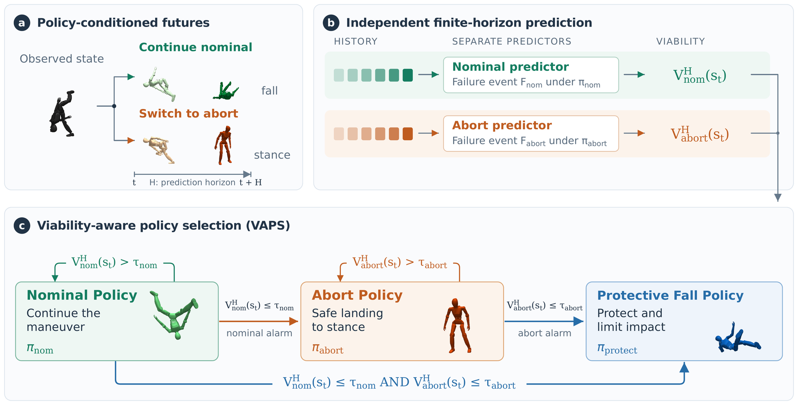
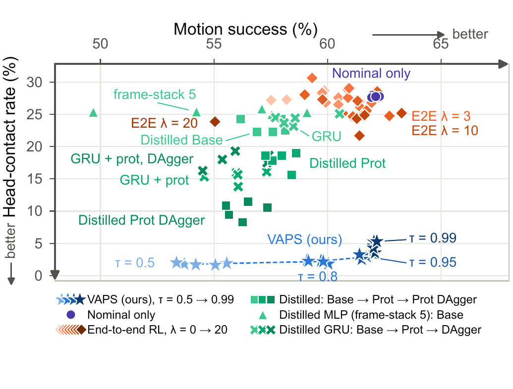
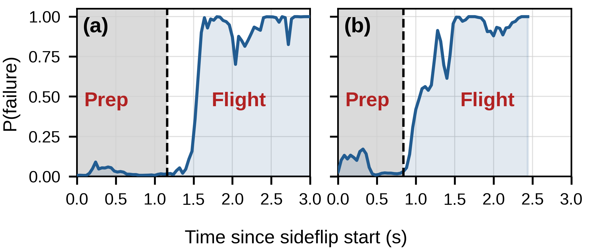
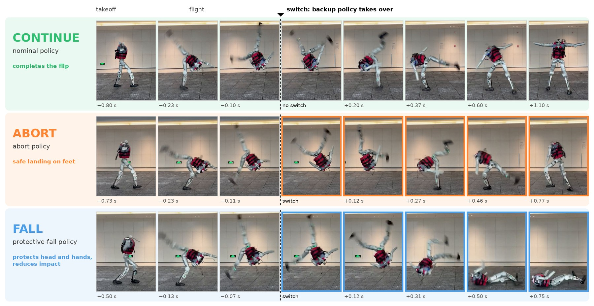
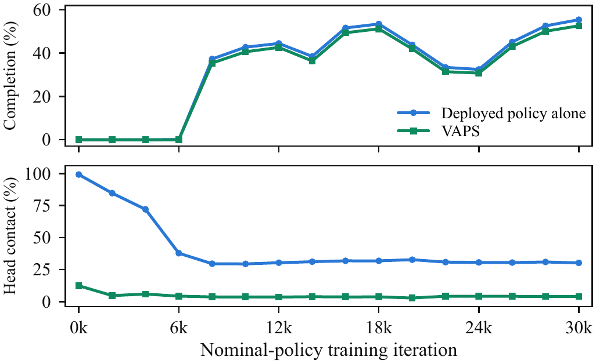

Anonymous submission · under review
Viability-Aware Policy Selection (VAPS) for Safe Humanoid Acrobatics
Undisturbed, the nominal policy completes the side flip on the LimX Oli and lands on its feet.
Handed the maneuver mid-flight, the abort policy gives up the flip and lands feet first.
Handed the same maneuver, the protective-fall policy performs a controlled fall protecting head and hands.
The same side flip on the physical LimX Oli with three possible endings. In the abort and protective-fall clips the switch is triggered by an operator mid-motion, and the segment around the switch plays at ¼ speed.
Dynamic humanoid motions such as flips risk hardware damage, due to suboptimal policies, disturbances or sim-to-real gaps. A motion-tracking policy offers no way out once the maneuver leaves its reference, and a backup policy needs to take over to protect the hardware for a least-damage landing. Which backup to use matters as much as when to switch.
We present Viability-Aware Policy Selection (VAPS), which treats safety as a policy-conditioned, receding-horizon decision. Besides a protective-fall policy, we also train an abort policy which can abort the motion at any time, landing on its feet. At every control step, learned predictors estimate whether the nominal tracking policy and the abort policy remain viable over a short horizon, and a least-sacrificial hierarchy keeps the most task-ambitious behavior that remains viable.
In simulation with randomized disturbances, VAPS sharply reduces head contact and hand contact, which are the dominant sources of hardware damage; on the LimX Oli, we validate the viability predictors and the full VAPS controller for side-flip motions, with the whole stack running on the robot's own CPU. VAPS Pareto-dominates the strongest single-network alternatives we could train, including an end-to-end safe-tracking policy and students distilled from VAPS's own oracle-routed decisions, on the task-success/head-impact frontier. We also show that VAPS is a powerful framework to supervise undertrained policies and protect the hardware.
VAPS formulates intervention during a dynamic maneuver as a selection over an ordered hierarchy of behaviors — continue, abort, and protective fall — committing to the smallest sacrifice of task ambition that remains viable.
We learn one viability predictor per backup from counterfactual rollouts and evaluate it continuously from proprioceptive history.
We investigate monolithic alternatives, including end-to-end RL policies and students distilled from VAPS with DAgger — with and without memory — and show that VAPS dominates all of them.
We deploy and validate VAPS on the LimX Oli humanoid, demonstrating successful cross-robot and sim-to-real transfer.
In simulation — Unitree G1, 6,144 disturbed episodes
On hardware — LimX Oli side flips
The three candidate behaviors, from the same disturbed state
Continue the maneuver. Undisturbed, the nominal policy completes the side flip and lands on its feet.
Give up the flip, keep the feet. The red ghost is the counterfactual — the same state replayed under the nominal policy, which ends up on the floor.
Once upright recovery is gone, stop defending the task and shape the impact away from the head and hands.
The selector running, one robot each
A bar per candidate against its own threshold tick. The nominal's viability collapses, the abort's holds, and the selector hands over; the red ghost is what the nominal would have done instead.
The same rule, the same read-out, on the Oli model — the robot the hardware trials use. The green figure is the reference motion the nominal policy is tracking.
Both renders run the paper's own components, so what the bars show is what the deployed selector reads.
One state, each arm of the comparison in turn
The three arms of the closed-loop table, back to back from one disturbed state, with a live peak-head-force read-out. The table's numbers are the G1's; this is the same comparison on the Oli.

| continue · πnom | while the nominal policy is predicted viable, V̂nom > τnom |
| abort · πabort | once the nominal alarms and the abort is still predicted viable, V̂nom ≤ τnom ∧ V̂abort > τabort |
| fall · πprotect | otherwise. |
The predictor calls the switch at 5.05 s and the abort policy takes the robot back to a stance. The clock is the trial's own.
The same state, replayed under each candidate
Carrying on with the nominal policy from the same state puts the robot on the ground: the maneuver was no longer recoverable.
The abort was still viable, and it is what the selector chose — the outcome the trial above actually got.
The terminal option: the robot goes down, but with the impact shaped away from the head and hands. Available here, and the right choice a little later.
All four are frame-locked to the same clock and play at real time. The green figure in the replays is the reference motion; the hardware panel ends 3.4 s after the switch, where someone walks into the laboratory shot.
Table ISpecialist performance across DR scales
| Policy | DR | Success ↑ | Head ↓ | Hand ↓ |
|---|---|---|---|---|
| Nominal | 1 | 100.0 ±0.0 | 0.0 ±0.0 | 0.0 ±0.0 |
| 2 | 86.2 ±1.6 | 8.1 ±1.1 | 13.6 ±1.6 | |
| 4 | 15.0 ±2.2 | 62.0 ±2.9 | 82.3 ±2.0 | |
| Abort | 1 | 100.0 ±0.0 | 0.0 ±0.0 | 5.0 ±0.0 |
| 2 | 89.0 ±8.2 | 9.0 ±6.5 | 11.0 ±7.4 | |
| 4 | 62.0 ±13.0 | 17.0 ±8.4 | 26.0 ±6.5 | |
| ProtFall | 1 | 100.0 ±0.0 | 0.0 ±0.0 | 4.0 ±2.2 |
| 2 | 98.0 ±2.7 | 2.0 ±2.7 | 9.0 ±8.9 | |
| 4 | 96.0 ±4.2 | 4.0 ±4.2 | 22.0 ±12.5 |
All values in %. Success for ProtFall is mitigation of harm (no head contact before timeout), not task completion.
Table IIPredictor comparison against final-outcome baselines
| Method | Episode acc. ↑ | Detection ↑ | FAR ↓ | Lead time ↑ |
|---|---|---|---|---|
| SafeFall (t2 = 100 ms) | 95.5 ±2.1 | 85.8 ±7.0 | 0.4 ±0.8 | 0.205 s ±0.012 |
| SafeFall (t2 = 200 ms) | 95.0 ±1.5 | 83.3 ±5.1 | 0.0 ±0.0 | 0.259 s ±0.014 |
| SafeFall (t2 = 500 ms) | 95.0 ±0.0 | 84.2 ±1.9 | 0.4 ±0.8 | 0.316 s ±0.063 |
| SafeFall (t2 = 1000 ms) | 93.5 ±1.6 | 79.2 ±5.1 | 0.4 ±0.8 | 0.281 s ±0.046 |
| VAPS (λ = 0.9, H = 50) | 97.5 ±1.5 | 91.7 ±5.1 | 0.0 ±0.0 | 0.416 s ±0.042 |
Held-out rollouts at the frozen validation threshold; mean ± std over five seeds; FAR is episode-level. t2 is the baseline's labelling window: larger values ask it to fire earlier.
Table IIIClosed-loop performance under randomized disturbances
| All episodes (%) | Fallen episodes only — median [mean] | ||||||
|---|---|---|---|---|---|---|---|
| Method | Success ↑ | Head ↓ | Hand ↓ | Other ↓ | Fall ↓ | Pk. head (N) | Pk. non-foot (N) |
| Nominal only | 62.1 ±0.2 | 27.7 ±0.2 | 36.6 ±0.2 | 36.3 ±0.1 | 37.9 ±0.2 | 540.2 [954.8] | 2124.6 [2608.6] |
| VAPS — shared alarm rule, τnom = 0.20 | |||||||
| VAPS (Nominal–Abort) | 59.6 ±0.4 | 5.0 ±0.4 | 7.4 ±0.5 | 5.5 ±0.3 | 7.4 ±0.5 | 833.5 [1076.0] | 2219.5 [2110.4] |
| VAPS (Nominal–ProtFall) | 59.6 ±0.4 | 2.0 ±0.1 | 11.8 ±0.6 | 39.9 ±0.5 | 40.4 ±0.4 | 0.0 [21.8] | 1871.8 [2058.6] |
| VAPS (one-shot) | 59.6 ±0.4 | 2.2 ±0.2 | 9.3 ±0.4 | 25.6 ±1.7 | 26.2 ±1.7 | 0.0 [62.2] | 1855.3 [2073.4] |
| VAPS (full hierarchy) | 59.6 ±0.4 | 1.6 ±0.2 | 8.8 ±0.5 | 25.6 ±1.8 | 26.1 ±1.7 | 0.0 [28.8] | 1835.7 [2032.3] |
| Monolithic, memoryless — one network, no switching, one frame in | |||||||
| End-to-end RL (λ = 10) | 61.9 ±0.9 | 24.0 ±1.6 | 36.1 ±1.3 | 36.7 ±0.8 | 37.9 ±1.0 | 388.2 [846.7] | 2051.5 [2372.4] |
| Distilled (base) | 57.4 ±0.8 | 23.1 ±1.1 | 33.6 ±1.1 | 30.4 ±0.8 | 34.0 ±1.1 | 756.3 [1100.8] | 2453.8 [2608.8] |
| Distilled (+ protect) | 58.0 ±0.6 | 17.9 ±1.4 | 36.7 ±0.5 | 36.1 ±0.5 | 38.4 ±0.6 | 18.2 [712.8] | 2329.8 [2552.1] |
| Distilled (+ protect, DAgger) | 56.3 ±0.7 | 10.1 ±1.3 | 39.7 ±1.0 | 40.5 ±0.7 | 42.3 ±1.0 | 0.0 [326.6] | 2132.8 [2456.4] |
| Monolithic with memory — one network, no switching, history in the input or a carried state | |||||||
| Distilled frame-stack 5 (base) | 55.5 ±3.7 | 25.4 ±0.3 | 39.2 ±3.3 | 35.0 ±1.2 | 39.7 ±3.3 | 675.0 [1039.2] | 2383.7 [2498.0] |
| Distilled GRU (base) | 58.7 ±1.1 | 24.2 ±0.8 | 34.8 ±1.1 | 32.2 ±0.8 | 35.2 ±1.1 | 774.2 [1121.0] | 2482.6 [2619.2] |
| Distilled GRU (+ protect) | 56.0 ±1.0 | 15.4 ±0.9 | 35.3 ±1.4 | 34.3 ±1.9 | 37.0 ±1.3 | 0.0 [646.8] | 2256.1 [2502.4] |
| Distilled GRU (+ protect, DAgger) | 56.1 ±1.3 | 17.9 ±1.2 | 33.6 ±1.4 | 32.2 ±1.3 | 34.8 ±1.5 | 227.2 [835.9] | 2369.2 [2574.4] |
± is over five seeds. Nominal–Abort and Nominal–ProtFall restrict the hierarchy to a single backup; all four VAPS rows share the same alarm rule and therefore the same motion success. One-shot consults the abort predictor once, at the alarm, and commits to the backup it picks; full hierarchy additionally keeps the abort predictor running during the abort and escalates to the protective fall when its prediction drops. Bold marks the best value per column on the leading statistic; no head median is bolded because several rows tie at zero.
What the frontier shows

| Trials | Class. acc. | FAR | Lead time |
|---|---|---|---|
| Success (n = 8) | 100.0% | 0.0% | — |
| Failure (n = 5) | 100.0% | — | 0.544 s |
| Overall (n = 13) | 100.0% | 0.0% | 0.544 s |
Deployed nominal predictor (λ = 0.9, H = 50). Failure lead times range 0.12–0.80 s.

The two trials behind that figure
Each clip carries its own recorded hazard trace and a take-off marker, so footage and curve are provably the same trial. The hazard climbs while the robot is still in the air.
The second plotted rollout. No backup is engaged in either clip — these are the predictor's calls on the unsupervised nominal policy.

Table IVClosed-loop routing on hardware, 18 trials
| Routing pattern | Trials | Objective met |
|---|---|---|
| Nominal only | 2 | 2 |
| Nominal → abort | 10 | 9 |
| Nominal → abort → protective fall | 4 | 3 |
| Nominal → protective fall | 2 | 1 |
| Overall | 18 | 15 (83.3%) |
Objective met is judged against whichever specialist ended up in control: the maneuver completed, the robot returned to a stance, or the fall taken with head and hands clear.
A push during the flip. The nominal hazard crosses its threshold, the selector hands the maneuver to the abort at 5.99 s, and the robot stays on its feet. Both bars are live on the robot.
The whole ladder in one trial: abort at 6.00 s, protective fall at 6.42 s. Its escalation threshold was lowered further to exercise the second handoff, so it shows the mechanism, not the operating point of the table.
Both clips carry their own speed badge and are shown unaltered at that speed.
Without supervision the robot goes down unshaped. The predictor flags this trial before the fall becomes unavoidable.
A second failure from a different disturbance. Both clips motivate the pipeline rather than demonstrate it; no alarm is raised on any of the eight successful trials.
People in the raw laboratory footage are obscured throughout: the two failure clips are composited with the robot sharp over a blurred background, the predictor trials carry a face pass, and the closed-loop trial keeps a feathered patch at the edge of frame.

@article{anonymous2026vaps,
title = {Continue, Abort, or Fall: Viability-Aware Policy Selection (VAPS)
for Safe Humanoid Acrobatics},
author = {Anonymous Authors},
journal = {Under review},
year = {2026}
}